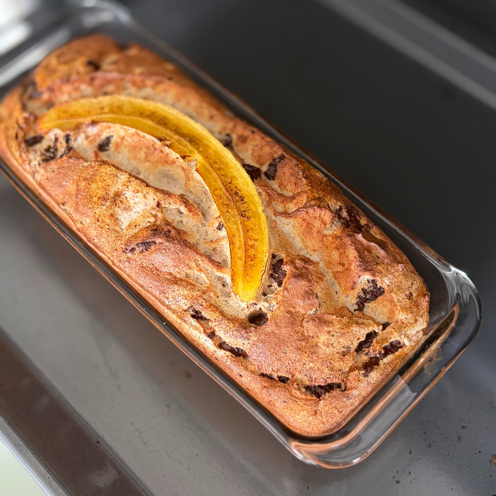

עוגת בננות משגעת
עודכן: 6 במאי
טבלת ערכים תזונתיים בקירוב:
שימו לב שזו טבלה עבור עוגת בננה עם קמח קוקוס וסוויטאנגו (היא כוללת את קישוט הבננה והשוקולד)
| ערכים | פרוסת עוגה (45 גרם) | 100 גרם |
|---|---|---|
| קלוריות | 70 | 154 |
| פחמימות | 5.7 | 12.7 |
| חלבונים | 3.8 | 8.5 |
אחרי מסע ארוך של ניסיונות, דיוקים ואינספור בננות, עוגת הבננות המושלמת סוף סוף כאן.
הדרך אל התוצאה הסופית הייתה מסע ארוך: פעם היא יצאה רטובה מדי, פעם הערכים לא היו מספיק מדויקים, ופעם האפייה פשוט לא צלחה...
אם לא התגובות החמות שלכם לכל סטורי עם התרגשות, כנראה שהייתי מרימה ידיים מזמן.
אבל אחרי אינספור ניסיונות והרצון להגיש לכם עוגה שהיא גם בריאה וגם טעימה ללא פשרות – אני חושבת שהגענו ליעד. היא אוורירית, יפה, נימוחה ועם ערכים מעולים שמשתלבים ביומיום שלנו. אז הנה היא לפניכם, בכבודה ובעצמה.

המתכון:
כמות: תבנית מעט יותר גדולה ורחבה מתבנית אינגליש קייק חד פעמית (אני השתמשתי בתבנית 10.5x27.5 ובגובה 6.5).
*במידה ואין תבנית קצת יותר גדולה מהאינגליש קייק החד פעמית, השתמשו בתבנית האינגליש קייק ומלאו אותה עד 3/4 לגובהה ואת שאר הבלילה העבירו לתבנית אישית או תבניות מאפינס.
מרכיבים:
1 בננה בינונית (כ-75 גרם)
2 כפות קמח שקדים (15 גרם)
1 כף קמח קוקוס (8 גרם) או 1/2 2 כפות אבקת חלבון (16 גרם)
שימו לב: אם אבקת החלבון ממותקת, מומלץ להפחית מכמות הממתיק בהתאם. אם היא בעלת טעם דומיננטי, ודאו שהוא משתלב בעוגה (במקרה כזה ניתן לוותר על הקינמון).
1 כפית קינמון
1/4 כפית אבקת אפייה
4 חלבוני ביצה (החלבון בלבד)
1 כפית חומץ / מיץ לימון
35 גרם סוויטאנגו / 35 גרם דבש
1 כפית תמצית וניל איכותית
25 גרם שוקולד (קצוץ או צ'יפס) - אני השתמשתי בשוקולד 84% ללא סוכר
רשות (קישוט): פרוסת בננה נוספת (כ-20 גרם)
הוראות הכנה:
חממו תנור מראש ל-170 מעלות בתוכנית טורבו ושמנו היטב את תבנית האפייה.
מעכו את הבננה בקערה עד לקבלת מרקם חלק ללא גושים. ערבבו פנימה את קמח השקדים, הקינמון וקמח הקוקוס (או אבקת החלבון) והניחו לתערובת בצד לכמה דקות לספיגת נוזלים.
הקציפו במיקסר במהירות גבוהה את חלבוני הביצה (ללא שאריות חלמון), אבקת האפייה, החומץ (או הלימון), הממתיק ותמצית הווניל עד לקבלת קציפה יציבה מאוד ומבריקה.
העבירו כף מקציפת החלבונים לתערובת הבננה וקפלו בעדינות. חזרו על פעולה זו פעם נוספת, עד שתערובת הבננה מקבלת מרקם אוורירי וצבע בהיר. העבירו את תערובת הבננה לשאר קציפת החלבונים וקפלו בעדינות על מנת לשמור על המרקם האוורירי של הבלילה.
שפכו את הבלילה לתבנית, פזרו מעל את השוקולד הקצוץ וכסו אותו מעט בבלילה. הניחו מעל את פרוסת הבננה לקישוט.
רשות- פזרו מעט אלולוז או סוויטאנגו גולד מעל העוגה לקבלת גוון קרמלי.
אפו במשך 26-30 דקות, עד שהעוגה יציבה ושחומה מכל צדדיה. לאחר האפייה אני קרמלתי מעט את הבננה בעזרת מבער (ברנר), אך זה לא חובה.
צננו את העוגה בטמפרטורת החדר לפחות 15-20 דקות לפני האכילה כדי שתתייצב.
שימו לב: העוגה מעט יורדת בגובה לאחר הקירור וזה בסדר גמור! זה קורה בגלל כמות האוויר הגדולה שנוצרת משילוב קציפת החלבונים ואבקת האפייה. לאחר הצינון תישאר לכם עוגה עשירה, דחוסה במובן הטוב של המילה ופשוט כיפית בטירוף.
סרטון מתהליך ההכנה:
לינק לסרטון קצר